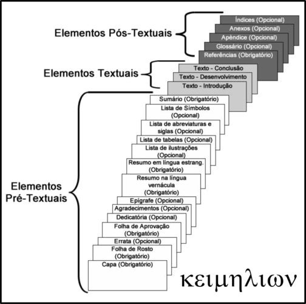

Objetivos
- Apresentar o $\LaTeX$
- Apontar caminhos que facilitem sua adoção
- Exemplos práticos
Histórico
- Criação do $\TeX$ por Donald Knuth em 1978
- Criação do $\LaTeX$ por Leslie Lamport em 1983
Filosofia: Separar forma do conteúdo.
Exemplo de Documento Mínimo
Ecossitema e Aplicações 1/2
Ecossitema e Aplicações 2/2
Por que adotar o $\LaTeX$?
- Elevada qualidade dos pdfs gerados
- Elevado padrão de elementos tipográficos
- Software livre e gratuito
- Consistência nos resultados
- Arquivo texto
- Automatismos
Exemplos
- Trabalhos de Disciplinas
- Artigo Científico
- Dissertações e Teses
Aspectos Fundamentais
- Subdivisões, listas
- Texto: negrito, itálico
- Fórmulas
- Figuras e Tabelas
- Citações
Elementos Pré, Pós e Textuais
